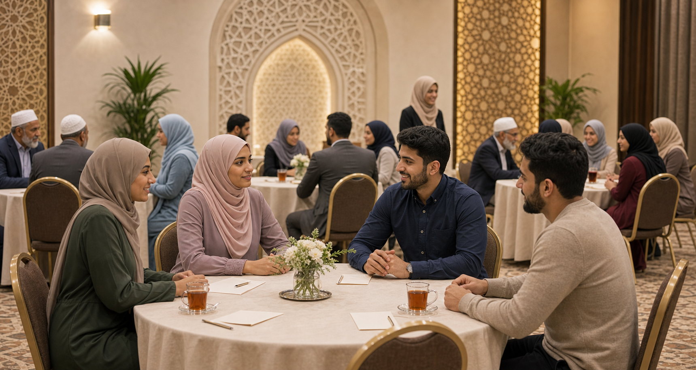

Step 2
Guided small-group icebreakers
Conversation prompts help participants talk about values, family, faith, and future plans without awkward guessing.
What to expect
Hosts guide small groups through thoughtful prompts. The goal is not speed dating; it is a respectful first impression shaped by character and clarity.
- Prompts about deen, communication, family hopes, work, and community life.
- Short, structured rounds so everyone has a chance to speak.
- Hosts nearby to keep the tone comfortable and dignified.